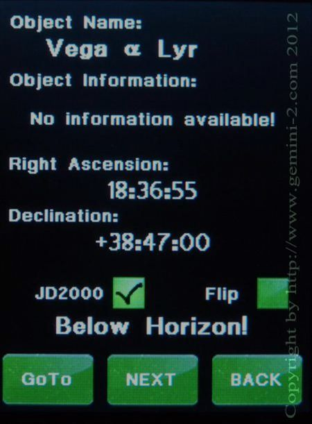

| Interactive Hand-Controller Menus - click on green button to Navigate |
|  |
It just happens that the Vega screen was selected. But notice the message "Below Horizon!" There is a check box for JD2000, it is recommend that you keep this checked. The Flip box if checked will let the mount try and flip to reach the target. It does not enforce a flip, but if the mount can do a flip and reach the target safely, then it will. If the only way the mount can reach the target safely is to do a flip, it will, even if the Flip box is not checked. Since Vega is below the Horizon, lets hit the next button and see if there are any more stars that started with a V. Hit the NEXT button. |